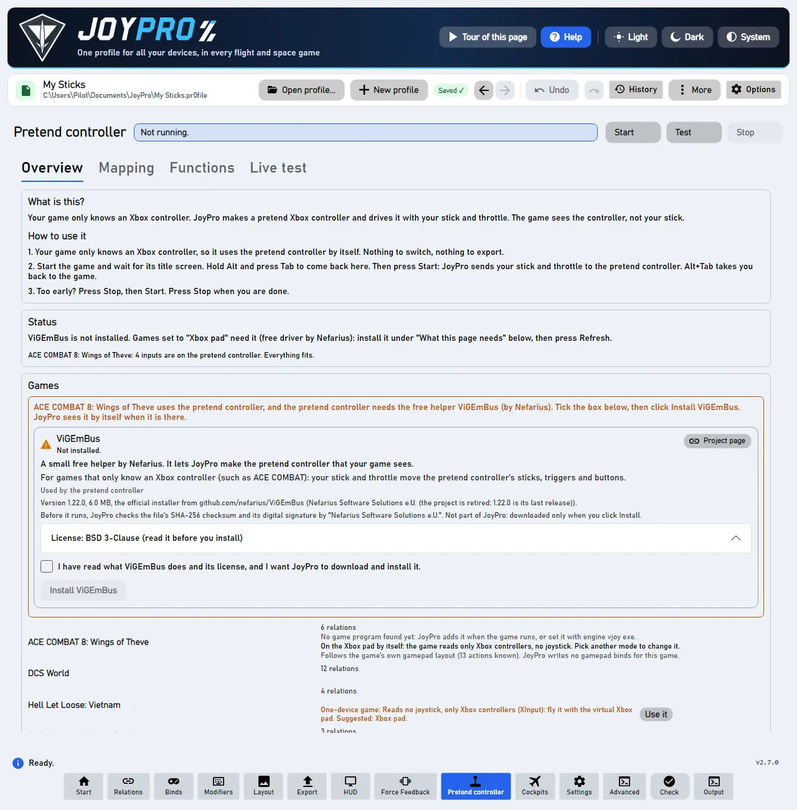

Hell Let Loose: Vietnam је пешадијска пуцачина на Unreal Engine 5 са хеликоптерима којима се може летети, али уопште не чита џојстик: само тастатуру, миш и Xbox контролере. Његови распореди пада су фиксни (у игри бирате A, B или C). Зато JoyPro њиме управља преко заменског контролера (виртуелни Xbox пад): ваша палица, throttle и педале покрећу контроле пада које ваш распоред користи за сваку радњу хеликоптера. JoyPro за пад ништа не уписује. Уписује само тастере тастатуре за пилота, када их затражите.
Hell Let Loose: Vietnam виртуелни Xbox пад
- Подршка
- виртуелни Xbox пад
- Команда машине
engine hllv- Датотека додела
%LOCALAPPDATA%\HLLVietnam\Saved\SaveGames\EnhancedInputUserSettings.sav(GVAS; само тастери тастатуре)- Улази које игра чита
- не чита ниједан џојстик, само Xbox падове
- Листа команди из
- JoyPro-ova сопствена табела три распореда пада и пилотских тастера; сопствене датотеке игре само уз библиотеку Oodle (из друге игре, после вашег да)
- Тест у игри
- 19/19 корака прођено (2026-10-11)
- ◐ УвезиHell Let Loose: Vietnam не чита ниједан џојстик: JoyPro чита и уписује њене тастере тастатуре; распоред пада одређује игра.
- ◐ ИзвозHell Let Loose: Vietnam не чита ниједан џојстик: JoyPro чита и уписује њене тастере тастатуре; распоред пада одређује игра.
- ✓ Доделе тастатуре
- ✗ Модификатори
- ✓ Листа команди направљена на вашем рачунару
- ✓ Пратилац игара
- ✓ Криве оса и мртве зоне
- ✗ Подешавања контрола у игри
- ✗ Подешавања force feedback-a у игри
- ✗ Force feedback из телеметрије
- ✗ Снимање телеметрије
- — Виртуелни joystick (vJoy)
- ✓ Виртуелни Xbox пад
- ✓ Виртуелне функције
- ✓ Чаробњак за подешавање / Ауто Assign
- ✗ Кокпити
- ✓ Подсетници
- ✓ Тест у игри
Hell Let Loose само документовано
- Подршка
- само документовано
- Команда машине
- нема
- — Увези
- — Извоз
- — Доделе тастатуре
- — Модификатори
- — Листа команди направљена на вашем рачунару
- — Пратилац игара
- — Криве оса и мртве зоне
- — Подешавања контрола у игри
- — Подешавања force feedback-a у игри
- — Force feedback из телеметрије
- — Снимање телеметрије
- — Виртуелни joystick (vJoy)
- — Виртуелни Xbox пад
- — Виртуелне функције
- — Чаробњак за подешавање / Ауто Assign
- — Кокпити
- — Подсетници
- — Тест у игри
Squad само документовано
- Подршка
- само документовано
- Команда машине
- нема
- — Увези
- — Извоз
- — Доделе тастатуре
- — Модификатори
- — Листа команди направљена на вашем рачунару
- — Пратилац игара
- — Криве оса и мртве зоне
- — Подешавања контрола у игри
- — Подешавања force feedback-a у игри
- — Force feedback из телеметрије
- — Снимање телеметрије
- — Виртуелни joystick (vJoy)
- — Виртуелни Xbox пад
- — Виртуелне функције
- — Чаробњак за подешавање / Ауто Assign
- — Кокпити
- — Подсетници
- — Тест у игри
Из матрице подршке, генерисане из кода машине: све игре.
#Покрените све у 3 корака
- Доделите хеликоптер
на страници Релације - Инсталирај ViGEmBus
затим Тестирај - Покрените игру
на њеном почетном екрану: Alt+Tab, Старт
#Подесите једном
- Отворите Почетак. Ако картица Hell Let Loose: Vietnam тражи листу команди, притисните Направи листу. JoyPro уписује сопствену табелу три распореда пада и тастера за пилота.
- Отворите Релације. Ставите своју палицу, throttle и педале на радње пада за хеликоптер: колектив, циклик, скретање. За колектив ставите једну осу throttle-a и на Collective up и на Collective down. JoyPro је дели на средини на два окидача.
- Отворите страницу Virtuelni joystick. Заменском контролеру је потребан бесплатан помоћник по имену ViGEmBus. Означите поље испод његове лиценце. Затим притисните Инсталирај ViGEmBus. Windows тражи дозволу: кликните Да. Ово радите само једном.
- Притисните Тестирај. Померите палицу. Слика контролера се помера заједно са њом.



Не морате ништа да пребацујете. Игра сама користи заменски контролер. Страница каже „Само од себе на Xbox паду: игра чита само Xbox контролере“. За ову игру вам не треба HidHide: она ионако никада не види ваше праве палице.
Подеси све уместо мене за сада познаје само тастере тастатуре за пилота у игри, не и њене радње пада. Зато радње пада доделите сами, као у кораку 2. Одговор добродошлице Играј ACE COMBAT мојом палицом приказује исте кораке за заменски контролер као обилазак.
#Сваки пут када играте
- Покрените Hell Let Loose: Vietnam. Сачекајте да прикаже свој почетни екран.
- Држите Alt и притисните Tab. Вратили сте се у JoyPro.
- Притисните Старт.
- Поново притисните Alt+Tab. Вратили сте се у игру. Летите!
- Када завршите, притисните Заустави.
Притисните Старт тек када игра прикаже свој почетни екран. Прерано? JoyPro каже „Прерано“. Притисните Заустави, затим Старт. Ово радите сваки пут када играте.
#Шта JoyPro ради за Hell Let Loose: Vietnam
- Хеликоптер на заменском контролеру: JoyPro познаје радње хеликоптера из три распореда пада (колектив, циклик, скретање, задржавање стабилности, аутоматско изравнавање, избацивање залиха, извиђачка ракета, поглед, седиште, болничар). Доделите им свој HOTAS, а заменски контролер помера палицу, окидач или дугме које игра очекује.
- Тастери тастатуре за пилота: на захтев, JoyPro чита и уписује тастере тастатуре игре за радње пилота.
- Hell Let Loose (оригинал) нема чиме да се лети, а Squad чита један спојени уређај: оба су само документована (погледајте Напредно).
#Увезите своје тастере за пилота
У игри нема додела џојстика за увоз. Улазе само тастери тастатуре за пилота:
- Притисните Увези на картици Hell Let Loose: Vietnam.
- Означите Преузми и типке тастатуре.
- Притисните Увези сада.


#Направите и проверите релације
Tok relacija ради као за сваку игру. Релација може да садржи радњу хеликоптера из ове игре и исту функцију из ваших симулатора летења. Тада је "Collective" свуда једна ручица throttle-a.
#Извоз
Заменском контролеру није потребан извоз: Старт на страници Виртуелни joystick прави његову табелу из ваших релација. Извоз уписује само тастере тастатуре за пилота, и то само ако сте при увозу означили тастатуру (избор се памти по игри): затворите игру, отворите Извоз, притисните Извези сада на њеној картици.
Игра види један Xbox контролер: њени менији приказују дугмад пада (на пример "B EXIT" у главном менију). Ваша палица, throttle и педале управљају хеликоптером онако како би то радио пад у распореду који сте изабрали. Тастери тастатуре за пилота које је JoyPro уписао приказују се у подешавањима тастера у игри.
#Шта радите сами у Hell Let Loose: Vietnam
- Притисните Старт на почетном екрану, сваки пут када играте (види горе).
- Изаберите распоред пада (A, B или C) у Options > Controls. После промене притисните Ажурирај мапирање на страници Виртуелни joystick (или Заустави и Старт). JoyPro тада прати нови распоред.
- Дугмад пада у игри не могу да се прерасподеле, па распоред одређује коју контролу пада има свака радња. JoyPro га прати. У игри за пад нема шта да се подешава.
#Честе замке
- Игра не reaguje: да ли је Старт притиснут прерано? Притисните Заустави, затим Старт на почетном екрану.
- Нема ViGEmBus-a: без њега игра не може да види вашу палицу. Инсталирајте га на страници Виртуелни joystick.
- Скретање и поглед се померају заједно у распоредима А и B: игра ставља скретање и поглед лево / десно на исту осу палице и одлучује према контексту. JoyPro тамо веже једну физичку осу и упозорава на другу.
- Колектив иде на погрешну страну: означите Обрни на релацији колектива. То замењује два окидача.
- Тастер за пилота није уписан: тастери тастатуре се уписују само уз избор тастатуре при увозу.
#Како ради заменски контролер
flowchart LR R["Палица, throttle,<br/>педале"] --> J["JoyPro<br/>(заменски контролер)"] L["Ваш распоред пада<br/>A, B или C"] --> J J --> G["Hell Let Loose: Vietnam<br/>види Xbox контролер"]
- Без HidHide-a. Игра чита само Xbox контролере, па никада не види ваше праве палице. Ништа не мора да се сакрије, а Windows не тражи администраторска права. HidHide је потребан само за игре подешене на vJoy.
- Режим се пребацује сам. Док не изаберете режим, игра користи Xbox пад. Изаберите други режим на страници Виртуелни joystick и JoyPro памти ваш избор.
- Ваша крива стиже до пада. Игра не добија извоз, па JoyPro сам примењује мртву зону, засићење, криву и обртање из Одзив осе (страница Доделе) на палицу или окидач пада. За сопствену криву означите само ову игру под Важи за. Иначе важи Подразумевана крива.
- Аутоматско покретање прави пад за око 3 секунде од покретања игре, пре њеног насловног екрана. У JoyPro тестовима пад направљен пре насловног екрана никада није стигао до ове игре. Тада на насловном екрану притисните Заустави па Старт.
- Више игара на паду: свака игра задржава своју табелу. Уз аутоматско покретање активира се табела игре која ради. Иначе је изаберите под Табела Xbox пада за „Старт” и „Тест”.
- Стручњаци: vJoy, HidHide, брзина прослеђивања и режими налазе се под Прикажи детаље за стручњаке (vJoy, HidHide, режими).
#Датотеке које JoyPro чита и уписује
| Датотека | Шта је то |
|---|---|
%LOCALAPPDATA%\HLLVietnam\Saved\Config\Windows\GameUserSettings.ini |
само читање: SelectedGamepadLayout (LayoutA, LayoutB или LayoutC) |
%LOCALAPPDATA%\HLLVietnam\Saved\SaveGames\EnhancedInputUserSettings.sav |
тастери тастатуре које сте променили; JoyPro тамо уписује пилотске тастере (уз опцију за тастатуру) |
...\EnhancedInputUserSettings.sav.joypro-meta.json |
JoyPro подаци о извезеним тастерима за следећи увоз |
#Распореди пада за хеликоптер
| Радња | A | B | C |
|---|---|---|---|
| Колектив горе / доле | RT / LT | LT / RT | RT / LT |
| Циклик pitch | лева палица Y | десна палица Y | лева палица Y |
| Циклик roll | лева палица X | десна палица X | лева палица X |
| Скретање (yaw) | десна палица X | лева палица X | LB / RB |
| Задржавање стабилности | B | B | B |
| Укључи/искључи аутоматско изравнавање | LS клик | LS клик | LS клик |
| Избацивање залиха | Д-пад десно | Д-пад десно | Д-пад десно |
| Извиђачка ракета | Д-пад горе | Д-пад горе | Д-пад десно |
| Поглед лево / десно, горе / доле | десна палица | лева палица | десна палица |
| Слободан поглед (држање) | RB | LB | - |
| Следеће седиште | Y | Y | Y |
| Болничар / радијални мени болничара | A / RB | A / RB | A / RB |
#Режими извоза (пилотски тастери на тастатури)
Један тастер по пилотској радњи. Дугме миша на пилотској радњи увек остаје; тастери за пешадију и заједнички тастери се никада не мењају.
| Режим | Шта се дешава |
|---|---|
| Само додај | Тастер игре остаје; тастер који има друга пилотска радња прескаче се и означава са „Није уписано у игру“. |
| Ажурирај, задржи доделе игре / Ажурирај, мој профил побеђује | Тастер из профила се поставља; друга пилотска радња на том тастеру га губи (игра тамо тада користи свој подразумевани). |
| Замени на мојим уређајима | Остали пилотски тастери које сте променили у игри враћају се на подразумеване вредности игре. |
| + Обриши и моје друге уређаје | Нема шта да се празни: игра не чува доделе џојстика. |
#Шта се никада не дира
- Распореди пада у игри: фиксни су и JoyPro не уписује доделе за пад.
- Тастери за пешадију и возила, дугмад миша, сваки други бајт датотеке сачуване игре.
- HidHide: заменском контролеру за ову игру није потребан.
#Пад, криве, остала подешавања
- Обрни на релацији осе обрће ту осу пада у JoyPro прослеђивачу. JoyPro примењује вашу криву осе и на пад (види горе); сопствена подешавања пада у игри примењују се после тога.
- Радња без тастера пада у распореду добија следећу слободну контролу пада; оно што не стаје наведено је на страници Виртуелни joystick. Virtuelne funkcije раде и на паду.
- Подешавања > Игре: Hell Let Loose: Vietnam: користи Oodle библиотеку друге инсталиране игре: датотеке игре су компресоване, а она не доноси библиотеку за њихово читање. Уз ваше одобрење JoyPro користи библиотеку коју има друга игра на овом рачунару, тамо где се налази (никада је не копира), да би направио листу из сопствених датотека игре. Искључено: JoyPro сопствена табела, што је све што режиму пада треба. Питај поново заборавља ваш одговор.
- Праћење: датотека сачуване игре за тастатуру прати се после затварања игре (praćenje igara).
- HUD: док игра ради, HUD приказује радњу сваког притиснутог дугмета.
#Hell Let Loose и Squad
| Игра | Шта је познато | JoyPro |
|---|---|---|
| Hell Let Loose (оригинал) | Њен Input.ini има само pitch / yaw за артиљерију и митраљез возила; ништа чиме се лети. |
Није планирано. |
| Squad | Чита један спојени HID уређај; beta верзија додаје више HOTAS уређаја. Доделе су у %LOCALAPPDATA%\SquadGame\Saved\Config\...\Input.ini. |
Чека се верзија са више уређаја; нема интеграције. |
#Унутар интеграције за Hell Let Loose: Vietnam
Код: engine\Games\HllVietnamIntegration.cs, engine\Games\GvasKeyMappings.cs; планер и прослеђивач пада из virtual-joystick.
- Улаз: извршна датотека игре нема DirectInput, raw input ни GameInput код, само тастатуру, миша и XInput. Игра се изјашњава као игра са једним уређајем (0 џојстика, предложени режим
xbox). - Листа команди:
DB\HLLVietnam\actions.tsv, две врсте редова: радње хеликоптераPad_*са подразумеваним тастером по распореду у 5. колони (A:Gamepad_LeftY|B:Gamepad_RightY|C:Gamepad_LeftY), и пилотски тастери тастатуреDriver_*.engine hllv refresh-dbуписује JoyPro сопствену табелу или чита улазне ресурсе игре када сме да се користи Oodle библиотека (прво сопствена библиотека игре, библиотека друге игре тек уз ваше одобрење:--oodle-dll <path>, учитава се тамо где се налази, само у процесу освежавања).engine hllv oodleнаводи библиотеку коју би користио. - План пада: планер чита распоред из
GameUserSettings.ini, везује сваку радњу за њен тастер у том распореду (Gamepad_LeftYнаXB_LY,Gamepad_FaceButton_RightнаXB_B...); релација на обе радње колектива постајеXB_TRIGGERS; Обрни додаје~(уз криву, крива га носи). Игра наводиMaxJoysticks0 и предложени режим xbox, па без сачуваног избора њен режим је xbox;engine vjoy modeHLLVietnam xboxчува избор.engine vjoy map. Без корака за HidHide:engine vjoy apply-hidhideза такве игре каже „HidHide is not needed“. - Табеле за подешавање:
DB\Functions\HLLVietnam.tsvза сада наводи само пилотске радње тастатуреDriver_*, па чаробњак за подешавање и брзо подешавање не распоређују радњеPad_*. - Датотека тастатуре: Unreal GVAS са Enhanced Input завршетком (профили, мапирања са именом, тастером, класом хардвера и местом). JoyPro поново исписује само мапирања
<Action>_Keyboardпилотских радњи; имена тастера претварају се у Unreal имена тастера (SpaceуSpaceBar,D1уOne). - Команде:
engine hllv paths,engine hllv catalog,engine hllv scan,engine hllv import,engine hllv export--include-keyboard --mode clean|add|merge|merge-overwrite --dry-run.
#Позната ограничења
- Let са виртуелним падом још није потврђен (колектив на окидачима, циклик, скретање, задржавање стабилности, избацивање залиха); менији су проверени.
- Скретање и гледање деле осу палице у распоредима А и B.
- Тестови:
engine\tests\smoke\hllv.ps1(ниједна библиотека се не учитава без вашег одобрења, резервна табела, прво сопствена библиотека игре); у игриtools\e2e\games\HllVietnamXbox.ps1(менији са виртуелним падом; vJoy и HidHide после тога непромењени).
Све техничке напомене о овој игри (генерисане из репозиторијума): hll-vietnam.md, one-device-games.md.